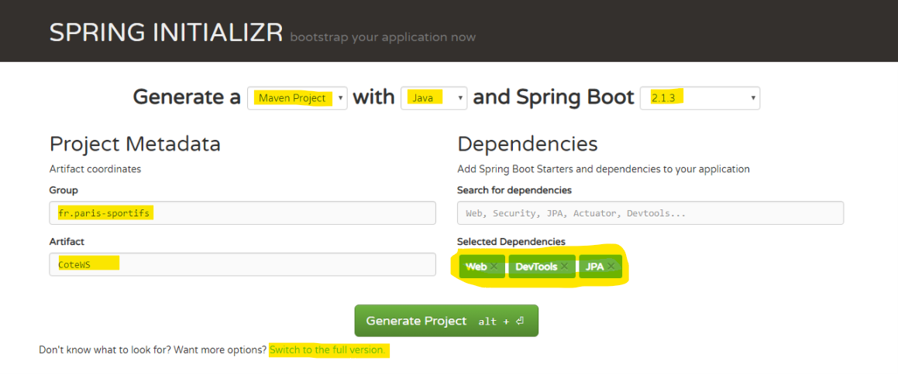

![smiley]()
Dans cet article nous allons créer notre premier microservice en utilisant le framework Spring Boot. Spring Boot permet de faciliter le développement d'applications fondées sur Spring en créant des applications packagées en jar, totalement autonomes et donc exactement ce dont nous avons besoin.
Depuis quelque mois suis devenu accros aux paris sportifs, nous allons créer un microservice qui va nous retourner la cote d'un match de foot, c’est à dire le taux retourné par le bookmaker si on mise sur l’équipe qui joue à domicile, sur un match nul ou sur une victoire de l’équipe visiteur.
https://fr.wikipedia.org/wiki/Pari_sportif#Cote_europ%C3%A9enne
Un appel de notre service :
GET http://localhost:8000/ms-paris-sportifs/foot/Paris/vs/Strasbourg
{
id: 4526,
domicile: "Paris",
visiteur: "Strasbourg",
c1:1.20,
cn:2.56,
c2:7
}
Dans cet exemple on va renvoyer la cote du match Paris contre Strasbourg :
Les cotes seront stockées dans une base de données.
Nous allons créer un bean qui représente une cote, un service permettant d'accéder aux cotes stockées dans une base de données et enfin le service REST.
Pour commencer, il suffit de se rendre sur https://start.spring.io/ : On va pouvoir composer notre application comme si on était sur une borne de commande rapide dans un fast food
Alors je voudrais un menu Maven en Java en version 2.1.3, avec supplément Web, Actuator, DevTools et un peu de JPA. Renseigner aussi le champ Group et Artifact :

Le bouton "Switch to full version" permet de liste toutes les dépendences existantes.
On valide notre commande avec le bouton Generate Projet. On obtient un fichier zip à décompresser.
Ensuite on importe le projet dans notre éditeur favoris, pour moi c'est Eclipse (File / Import / Maven / Existring Maven Projects puis choisir le dossier du fichier zip décompressé).

Quelques explications :
CoteWsApplication.java est le fichier qui permet de démarrer notre application (c'est l'équivalent d'un "Main")
application.properties est le fichier de configuration de notre application
pom.xml est la liste des bibliothèques Maven utilisée par le projet
Commençons à coder ! On va créer un bean qui va représenter une cote et qui sera stocké en base de données :
package fr.parissportifs.CoteWS;
import javax.persistence.Entity;
import javax.persistence.Id;
@Entity
public class Cote {
@Id
private Long id;
private String domicile;
private String visiteur;
private double c1;
private double cn;
private double c2;
public Cote() {
}
...
}
L'annotation @Entity définit que notre classe sera gérée en base de données. Par convention le nom de la table sera "Cote", avec les colonnes id, domicile, visiteur, c1, cn et c2. @Id définit le nom de la clé primaire.
(PS : Il faut ajouter les getters et setters pour les champs).
Comment utiliser ce bean dans notre application ? Nous allons créer un service JPA nous permettant de manipuler cette entité :
package fr.parissportifs.CoteWS;
import org.springframework.data.jpa.repository.JpaRepository;
public interface CoteRepository extends JpaRepository<Cote, Long>{
Cote findByDomicileAndVisiteur(String domicile, String visiteur);
}
Notre service va étendre JpaRepository et on pourra directement manipuler notre entité avec les fonctions de base JPA :
Le gros avantage de Spring Boot est la possibilité de créer des méthode automatiquement selon nos entités : La fonction findByDomicileAndVisiteur, comme son nom l'indique, va nous récupérer la cote selon les paramètres domicile et visiteur. Automatiquement Spring Boot va générer le code de la fonction !
Troisième étape, nous allons exposer un web service pour accéder à la méthode findByDomicileAndVisiteur et retourner l'objet au format REST :
package fr.parissportifs.CoteWS;
import org.springframework.beans.factory.annotation.Autowired;
import org.springframework.web.bind.annotation.GetMapping;
import org.springframework.web.bind.annotation.PathVariable;
import org.springframework.web.bind.annotation.RestController;
@RestController
public class CoteController {
@Autowired
private CoteRepository repository;
@GetMapping("/ms-paris-sportifs/foot/{d}/vs/{v}")
public Cote retrieveExchangeValue
(@PathVariable String d, @PathVariable String v){
return repository.findByDomicileAndVisiteur(d, v);
}
}
L'annotation @RestController définit notre classe comme étant un service REST.
@GetMapping("/ms-paris-sportifs/foot/{d}/vs/{v}") va définir l'URL de notre service ainsi que les paramètres (ici d et v).
On va simplement appeler notre repository pour récupérer la cote.
@Autowired permet d'instancier automatiquement l'objet CoteRepository
Cet exemple nous montre la puissance de Spring Boot. Avec quelques lignes de code et sans configuration, nous avons définit un service REST !
Et voila, notre microservice est terminé ! Il ne reste plus qu'à créer quelques données de tests, et encore une fois Spring Boot permet de faire cela très facilement. Créer un fichier data.sql dans le dossier ressources :
insert into cote(id,domicile,visiteur,c1,cn, c2) values(10001,'Paris','Strasbourg',1.2, 2.56, 7);
insert into cote(id,domicile,visiteur,c1,cn, c2) values(10002,'Lyon','Monaco',2.23, 2.87, 1.96);
insert into cote(id,domicile,visiteur,c1,cn, c2) values(10003,'Bordeaux','Marseille',1.50, 2.34, 1.39);
Au lancement de l'application, ce script SQL sera exécuté automatiquement.
Démarrer l'application en lancant la classe coteWsApplication et notre service sera disponible sur le port 8080 (port par défaut de Spring Boot) :
Notre premier microservice en action :

Mission accomplie, well done !
Le projet est disponible sur mon compte github.
Mais il reste quelques détails à expliquer.
Bien vu, par défaut Spring Boot utilise une base de donnée mémoire H2 ce qui est très pratique en mode développement. La fichier application.properties permet de configurer les accès vers d'autres bases de données : https://docs.spring.io/spring-boot/docs/current/reference/html/boot-features-sql.html
Ce module apporte plus de confort lors du développement. Par exemple quans un fichier source est modifié alors l'application se recharge automatiquement et les modifications sont directement appliquées !
Dans le prochain article nous verrons comment utiliser un serveur de nom pour faire communiquer deux microservices.